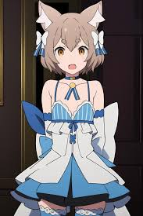

Felix é um personagem muito interessante do anime re:zero com uma aparencia um tanto diferente Felix possui cabelo castanho e olhos amarelos. Sua roupa casual constitui-se de colar azul com um laço, vestido azul, calças pretas, meia-calça azul, sapatos azuis, tampas de braço brancas e um lenço azul em volta do seu braço direito.
A aparência felina do Felix é resultado de sua herança Demi-humana e por esse motivo, ele sofria maus-tratos de seus parentes. As fitas azul e branca que ele usa foram presentes da Crush e ele sempre as usa não importando o que ele está vestindo. A seguir um pouco da historia dele
No momento em que Felix nasceu, ele tinha aparência felina devido a seus ancestrais possuírem sangue de Demi-Humano, causando seus pais a maltratá-lo por suspeitar de alguma traição.
Ele foi trancado no porão da mansão Argyle pelos primeiros nove anos de sua vida e quase não recebia cuidados durante esse tempo. Quando a Crusch encontrou ele, ela o descreveu como "um garoto frágil que era dolorosamente magro e coberto de sujeira, e que não conseguia falar corretamente". Crusch Karsten o limpa e o leva para o saguão principal da mansão dos Argyle, onde em um surto de raiva, Felix tenta esfaquear os pais. Crusch o bloqueia a tempo mas leva a facada ao invés da Matriarca Argyle, em seu desespero Felix faz a primeira cura de sua vida na pessoa que o retirou de seu longo confinamento.Logo depois, ele foi levado a mansão Karsten para receber cuidados e tornou-se um atendente da Crusch enquanto seus parentes perderam a pequena relação que eles tinham, levando ao declínio da família Argyle.
Agora que vocé conhece um pouco sobre o personagem, clique neste link que redirecionará a uma pagina muito legal sobre o personagem!
Clique Aqui!
Genghis Khan